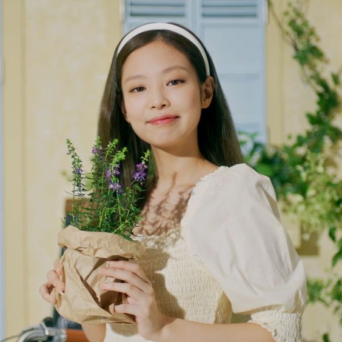
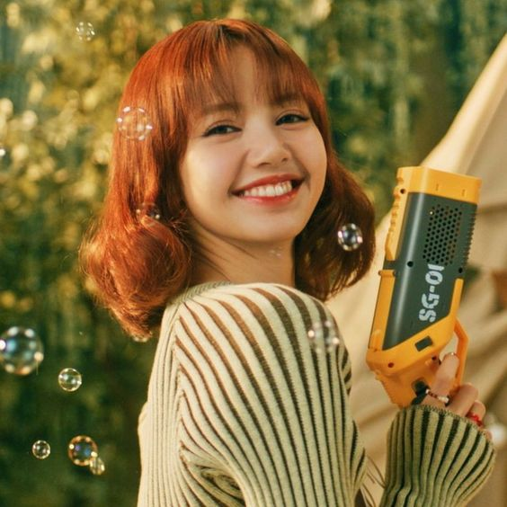

Blackpink (bahasa Korea: 블랙핑크, digayakan dalam huruf kapital semua atau sebagai BLɅƆKPIИK) adalah grup vokal wanita asal Korea Selatan.
Blackpink dibentuk oleh YG Entertainment dengan beranggotakan empat orang, diantaranya Jennie, Jisoo, Lisa, dan Rosé. Blackpink merupakan grup vokal wanita Korea yang memiliki lagu dengan posisi tertinggi di Billboard Hot 100, berada di nomor 55 dengan "Ddu-Du Ddu-Du", dan di Billboard 200, berada di nomor 40 dengan EP berjudul Square Up.
Blackpink merupakan grup pop Korea perempuan pertama dan satu-satunya yang memasuki dan memuncaki Emerging Artists Billboard.
Mereka juga merupakan grup pop Korea Selatan wanita pertama yang mempunyai empat lagu di Billboard World Digital Song Sales.
Jennie

Jennie Kim (lahir 16 Januari 1996), atau lebih dikenal dengan mononim Jennie, adalah penyanyi, rapper dan aktris Korea Selatan.
Dia debut bersama grupnya, Blackpink dengan posisi sebagai main rapper dan lead vocalist, yang didirikan YG Entertainment pada Agustus 2016.
Pada November 2018, Jennie debut sebagai penyanyi solo dengan singel berjudul "Solo". Singel ini sukses, dan masuk dalam jajaran Gaon Digital Chart dan Billboard World Digital Songs.
Pada tahun 2023, dia memulai akting pertamanya sebagai Dyanne dalam seri The Idol, dengan nama panggung Jennie Ruby Jane.
Jennie masuk dan bergabung menjadi pengikut latihan di YG Entertainment pada tahun 2010 selama kurang lebih 6 tahun sebelum akhirnya debut dengan grup vokal wanita bernama BLACKPINK.
Dari tahun 2012, Jennie telah beberapa kali menjadi model dan berkolaborasi bersama artis-artis YG, seperti menjadi model dalam video musik G-Dragon dalam lagu yang berjudul “That XX”, Seungri dalam lagu “GG Be”, dengan Lee Hi di lagu “Special” dan dengan beberapa penyanyi lainnya.
Kim Jennie juga pernah berduet di panggung Inkigayo dengan G-Dragon untuk penampilannya yang berjudul “Black”.
Rose
Roséanne Park (lahir 11 Februari 1997), atau dikenal sebagai Rosé adalah penyanyi dan penari berkebangsaan Korea–Selandia Baru.
Dia lahir di Auckland, dibesarkan di Melbourne, Victoria, Australia dan pergi ke Korea untuk debut sebagai anggota Blackpink.
Rosé dilatih di YGE selama empat tahun sebelum pengumumannya sebagai anggota Blackpink pada Juni 2016.
Dia adalah anggota terakhir yang terungkap. Grup ini memulai debutnya pada 8 Agustus 2016 dengan album tunggal Square One dan singel utama " Whistle " dan Boombayah".
Penyanyi ini juga muncul di berbagai program siaran seperti acara musik King of Masked Singer dan Fantastic Duo 2.
Penampilan vokalnya di King of Masked Singer disambut dengan sambutan hangat oleh para penonton, di mana Rosé berkomentar bahwa dia "tidak tahu apakah penonton ingin [dia] bernyanyi" dan bahwa dia merasa "bahagia dan lega" di acara tersebut. hasil positif.
Rosé kemudian muncul sebagai pemain di musim kedua Fantastic Duo. Staf produksi acara menyatakan bahwa penampilannya dimaksudkan untuk "mengungkapkan daya tarik vokal Rosé, yang berbeda dari Blackpink".
Pada 31 Januari 2021, Blackpink melakukan konser online pertama mereka bertajuk The Show. Pada konser itu pula Rosé membawakan lagu berjudul "Gone" yang merupakan salah satu lagu yang akan masuk dalam album solonya di masa yang akan datang.
Lisa

Lalisa Manoban (bahasa Thai: ลลิษา มโนบาล), lahir Pranpriya Manobal (bahasa Thai: ปราณปริยา มโนบาล; lahir 27 Maret 1997) atau lebih dikenal sebagai Lisa, adalah seorang penyanyi rap dan penari asal Thailand yang berbasis di Korea Selatan.
Ia merupakan anggota dari grup vokal wanita Blackpink, sebagai penari utama.
Pada bulan Agustus 2016, Lisa memulai debutnya sebagai salah satu dari empat anggota kelompok gadis Korea Selatan Blackpink , serta non-Korea pertama yang debut di bawah agensi.
Blackpink memulai debutnya dengan album tunggal Square One dengan singel utama "Whistle" dan "Boombayah". "Whistle" mencapai "all-kill" yang sempurna, melampaui semua tangga lagu Korea Selatan saat debut.
Pada Juli 2019, grup ini telah merilis satu album studio Jepang, Blackpink in Your Area, tiga drama diperpanjang, Blackpink, Square Up and Kill This Love, dan dua album tunggal, Square One dan Square Two.
Jisoo
Jisoo bergabung dengan YG Entertainment sebagai trainee pada Juli 2011 saat masih berusia 16 tahun hingga kemudian pada Agustus 2016 ia menjadi anggota band BLACKPINK. Sebelum debut, ia muncul di berbagai macam iklan komersial (CF), seperti Samsonite RED bersama aktor Lee Min-ho dan Smart Uniform dengan senior mereka iKON.
Dia juga muncul di musik video Epik High "Happen Ending" and Hi Suhyun "I'm Different". Pada 2015, dia tampil di drama KBS The Producers sebagai tamu, bersama dengan senior se-agensi Sandara Park dan Kang Seung-yoon.
Pada 1 Februari 2017, SBS mengumumkan bahwa Jisoo akan menjadi MC baru untuk Inkigayo pada 5 Februari 2017 hingga 4 Februari 2018 bersama dengan Got7's Jinyoung dan NCT's Doyoung.
Sebelum Jisoo menjadi trainee di YG, dia telah dikenal oleh banyak orang karena dia adalah seorang wanita muda yang sangat cantik. Dia sangat populer di sekolah karena wajahnya yang cantik dan karena bakatnya. Dia dulu belajar di Sekolah Tinggi Seni Pertunjukan Sekolah.
Dia akhirnya pindah sekolah ketika keluarganya pindah ke Seoul, Korea Selatan. Pada tahun 2012, ia terungkap melalui “Who’s That Girl?” Teaser oleh label, dan diikuti dengan dua foto pada bulan Januari tahun berikutnya.
SQUARE ONE
Square One adalah album singel debut oleh grup vokal wanita asal Korea Selatan, Blackpink. Singel ini dirilis secara digital pada 8 Agustus 2016 oleh YG Entertainment.
Liriknya ditulis oleh B.I, Teddy Park, Bekuh Boom, sedangkan musiknya disusun oleh Teddy Park, Future Bounce, dan Bekuh Boom.
Untuk mempromosikan Square One, Blackpink mengadakan pertunjukan live pertama "Whistle" dan "Boombayah" di SBS Inkigayo pada 14 Agustus 2016.
Seminggu kemudian, pada tanggal 21 Agustus, grup tersebut memenangkan penghargaan pertamanya selama program musik untuk "Whistle" di Inkigayo.
Daftar Lagu
"Whistle" (휘파람; Hwi-param)
"Boombayah" (붐바야)
SQUARE TWO
Square Two (ditulis dengan huruf besar semua) adalah album single kedua oleh girl grup Korea Selatan Blackpink. Album ini dirilis sebagai single digital pada 1 November 2016 oleh YG Entertainment dan didistribusikan oleh KT Music.
Single ini memiliki double A-side, "Playing with Fire" dan "Stay" serta versi akustik dari "Whistle".
Liriknya ditulis oleh Teddy Park dan musiknya disusun oleh Teddy Park, R.Tee dan Seo Won-jin.
Pada 19 Oktober 2016, terungkap bahwa Blackpink akan menjadi artis YG Entertainment berikutnya yang melakukan comeback. Pada tanggal 24 Oktober, gambar teaser anggota Lisa dan Jennie terungkap, dengan nama salah satu judul utama, "Playing With Fire", diikuti oleh gambar teaser Rosé dan Jisoo pada hari berikutnya.
Foto teaser dari seluruh grup terungkap pada tanggal 27 Oktober untuk lagu utama kedua "Stay".
Pada tanggal 30 Oktober, YG Entertainment memposting video di belakang panggung untuk "Stay" dan hari berikutnya untuk "Playing With Fire".
Daftar Lagu
"Playing with Fire" (불장난; Buljangnan)
"Stay"
"Whistle (휘파람)" (acoustic version)
SQUARE UP
Square Up (ditulis sebagai SQUARE UP) adalah album mini pertama dari grup vokal wanita asal Korea Selatan Black Pink. Album ini dirilis pada tanggal 15 Juni 2018 oleh YG Entertainment.
Album mini ini tersedia dalam dua versi dan berisi empat lagu, dengan "Ddu-Du Ddu-Du" dirilis sebagai singel utama.
Setelah dirilis, Square Up memulai debutnya di posisi teratas Tangga Album Gaon dan terjual hampir 179.000 kopi pada lima belas hari pertama perilisannya di Korea Selatan.
Album ini juga memulai debutnya di nomor 40 di Billboard 200 AS, menjadi album terlaris ketiga Blackpink di pasar Barat serta charting tertinggi ketiga hingga saat ini oleh grup K-pop perempuan.
Daftar Lagu
"Ddu-Du Ddu-Du" (title)
"Forever Young"
"Really"
"See U Later"
KILL THIS LOVE
Kill This Love adalah album mini berbahasa Korea kedua dari grup vokal wanita asal Korea Selatan Blackpink, dirilis pada tanggal 4 April 2019, oleh YG Entertainment dan Interscope Records.
Album ini merupakan materi berbahasa Korea pertama mereka yang dirilis sejak Square Up pada Juni 2018, dan debut rilis mereka dengan Interscope Records. Kill This Love dirilis sebagai singel utama.
Daftar Lagu
"Kill This Love"
"Don't Know What To Do"
"Kick It"
"Hope Not"
"Ddu-Du Ddu-Du (Remix Version)"
THE ALBUM
The Album adalah album studio Korea pertama (kedua secara keseluruhan) oleh grup vokal wanita asal Korea Selatan Blackpink, yang dijadwalkan akan dirilis pada tanggal 2 Oktober 2020, lewat YG Entertainment. Merupakan album artis wanita Korea terlaris sepanjang sejarah dengan penjualan Gaon yang menyentuh angka 1,2 juta salinan album dalam 1 bulan penjualannya.
Album ini akan didahului oleh sebuah singel utama serta dua singel pra-rilis: yang satu berjudul "How You Like That" yang dirilis pada 26 Juni 2020 dan "Ice Cream" yang dirilis pada tanggal 28 Agustus 2020, serta singel utama yang berjudul "Lovesick Girls" yang dirilis pada tanggal 2 Oktober 2020.
Album ini akan menjadi album Korea Blackpink pertama yang dirilis semenjak Kill This Love (2019). Album ini dirilis untuk pre-order pada tanggal 28 Agustus.
Untuk album tersebut, Blackpink merekam lebih dari 10 lagu baru dan bekerja sama dengan banyak produser ternama worked, termasuk Teddy, Tommy Brown, R. Tee, Mr. Franks dan 24.
Semua lagu ditulis dan direkam dalam isolasi selama pandemi COVID-19, mereka menyatakan bahwa album ini "dapat memberikan banyak cahaya dan energi untuk semua orang yang terjebak di rumah dan tidak tahu apa yang harus dilakukan, semoga ini bisa menghibur mereka".
The Album menghasilkan tiga buah singel. "How You Like That" dirilis sebagai singel pertama pada tanggal 26 Juni 2020. "Ice Cream" dengan penyanyi asal Amerika Selena Gomez yang dirilis sebagai singel kedua pada tanggal 28 Agustus 2020. "Lovesick Girls" disiapkan untuk rilis sebagai singel ketiga bersamaan dengan rilisnya album pada tanggal 2 Oktober 2020.
Daftar Lagu
"How You Like That" (title)
"Ice Cream" (ft. Selena Gomez)
"Pretty Savage"
"Bet You Wanna" (ft. Cardi B)
"Lovesick Girl"
"Crazy Over You"
"Love To Hate Me"
"You Never Know"
BORN PINK
Born Pink adalah album studio kedua girl grup Korea Selatan Blackpink yang dirilis pada 16 September 2022 melalui YG Entertainment dan Interscope Records. Ini menandai rekor full-length pertama grup sejak The Album pada tahun 2020.
Produksi album ditangani oleh berbagai produser termasuk Teddy Sinclair, Willy Sinclair, Bekuh Boom, R. Tee, Kush dan Teddy Park.
Blackpink menganggap Born Pink sebagai "esensi" grup, mengambil inspirasi dari suara hip-hop di seluruh album dan menggabungkan berbagai genre.
Daftar Lagu
"Pink Venom"
PROFILE
Nama Lengkap : Hadi Rabbani
Tempat, Tanggal Lahir : 07 Februari 2003
Prodi : Teknik Informatika
Kelas : IF - 1
Universitas : Universitas Komputer Indonesia (UNIKOM)